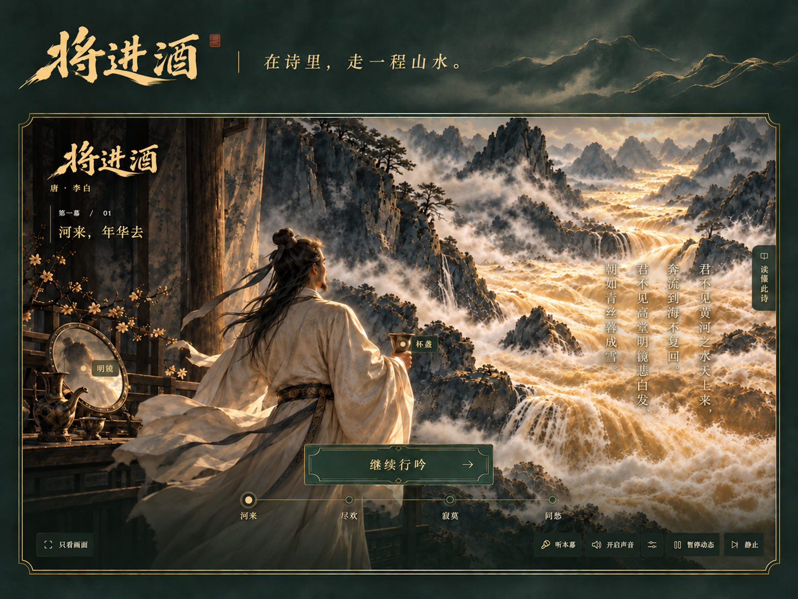
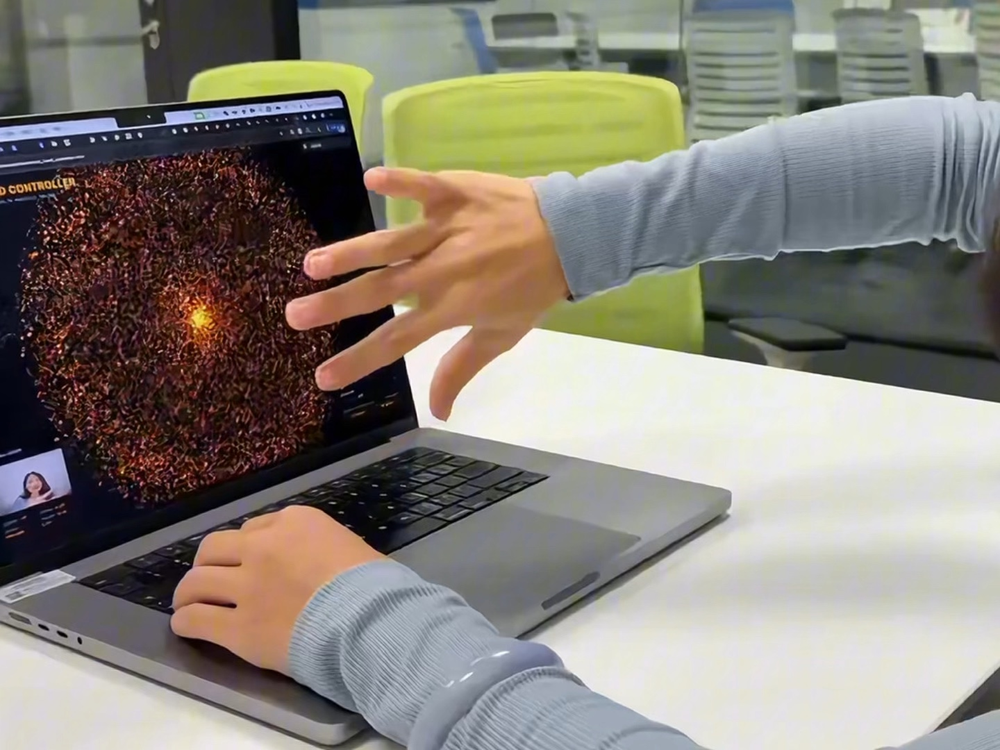

AskAI on-call & incident-resolution product
Resolving a user's report — AI and experts each doing their part.
Lead designer — product structure, human-in-the-loop flow, and delivery of components and theming.

WORK / BY PRACTICE
Design work across engineering, data, and AI products — plus personal builds made with AI. Each project has its own origin, trade-offs, and current state.
New here? Start with Ask · AI product design or Space · complex platform design.
AI PRODUCTS
From building agents to on-call resolution — understanding how AI enters work, and how people stay involved.
Resolving a user's report — AI and experts each doing their part.
Lead designer — product structure, human-in-the-loop flow, and delivery of components and theming.


An AI app-building platform for agents and workflows — an intermediate form of the AI era.
Guided theming and co-built business components from the design-system side; front-line requirements and page design belonged to the project designer.
COMPLEX PLATFORMS
Enter complex domains, untangle roles, objects, and tasks, and improve the product experience within existing engineering constraints.


From one product to a full platform — building the design foundation for engineering infrastructure.
Entered through early product design; built domain understanding, the design foundation, and a team that could take it over.


Untangling permissions, execution, and dependencies in data work.
Started from key products on an already-mature platform; improved complex tasks and built professional design support.
DESIGN SYSTEM
Turn project experience into components, guides, and reusable methods — and watch whether they hold up in real work.

A shared design foundation that supports business differences — and keeps absorbing feedback.
Led InfraD from zero, and maintain components, theming, and usage guidance with the front-end team.
INDEPENDENT BUILDS
A conversation, an interest, or a small unsolved problem nearby — any of these can start a build. Starting from zero coding background, I use AI and open-source tools to turn these ideas into openable, interactive pieces, and I record the gap between what I imagined and what got made.

Moved by a documentary director's original intention behind the National Parks project, I combined nature imagery with first-person roaming to build a rainforest you can walk into.

Inspired by a colleague building AI teaching tools for their kids, I combined the poem, reading, imagery, and interaction into a four-scene experience.

Colleagues have made many fun little things with AI. I wanted to give these works a place to be seen and discussed.

I love match-3 games and wanted my own version. On an open-source project, I used Codex to redo the art, gameplay, and rules.

Using Gemini Canvas, Three.js, and MediaPipe, I made an orange particle planet you turn and zoom with hand gestures.